Regression¶
Given  observations of two scalars 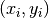 for
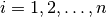, consider the simple linear regression model
observations of two scalars 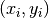 for
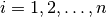, consider the simple linear regression model
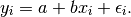
Assume that 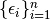 are exchangeable.
You are interested in testing whether the slope of the population
regression line is non-zero; hence, your null hypothesis is
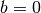. If , then the model reduces to
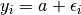 for all  . If this is true, the
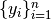 are exchangeable since they are just shifted
versions of the exchangeable . Thus
every permutation of the has the same
conditional probability regardless of the
. If this is true, the
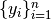 are exchangeable since they are just shifted
versions of the exchangeable . Thus
every permutation of the has the same
conditional probability regardless of the  s. Hence every
pairing
s. Hence every
pairing  for any fixed and for
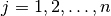 is equally likely.
for any fixed and for
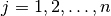 is equally likely.
Using the least squares estimate of the slope as the test statistic, you can
find its exact distribution under the null given the observed data by computing
the test statistic on all possible pairs formed by permuting the  values, keeping the original order of the values. From the
distribution of the test statistic under the null conditioned on the observed
data, the is the ratio of the count of the as extreme or more extreme test
statistics to the total number of such test statistics. You might in principle
enumerate all
values, keeping the original order of the values. From the
distribution of the test statistic under the null conditioned on the observed
data, the is the ratio of the count of the as extreme or more extreme test
statistics to the total number of such test statistics. You might in principle
enumerate all  equally likely pairings and then compute the exact p-value.
For sufficiently large , enumeration becomes infeasible; in which
case, you could approximate the exact p-value using a uniform random sample of the
equally likely pairings.
equally likely pairings and then compute the exact p-value.
For sufficiently large , enumeration becomes infeasible; in which
case, you could approximate the exact p-value using a uniform random sample of the
equally likely pairings.
A parametric approach to this problem would begin by imposing additional
assumptions on the noise  . For example, if we assume
that 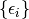 are iid Gaussians with mean zero, then the
the least squares estimate of the slope normalized by its standard
error has a
. For example, if we assume
that 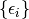 are iid Gaussians with mean zero, then the
the least squares estimate of the slope normalized by its standard
error has a  -distribution with
-distribution with  degrees of
freedom. If this additional assumption holds, then we can read the off a
table. Note that, unlike in the permutation test, we were only able to
calculate the p-value (even with the additional assumptions) because we happened
to be able to derive the distribution of this specific test statistic.
degrees of
freedom. If this additional assumption holds, then we can read the off a
table. Note that, unlike in the permutation test, we were only able to
calculate the p-value (even with the additional assumptions) because we happened
to be able to derive the distribution of this specific test statistic.
Derivation¶
Given observations
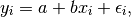
the least square solution is
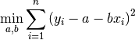
Taking the partial derivative with respect to 
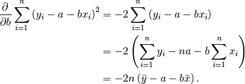
Setting this to  and solving for yields our estimate
and solving for yields our estimate 
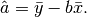
Taking the partial derivative with respect to 
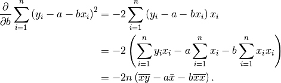
Plugging in , setting the result to , and solving for yields
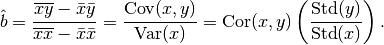
Since 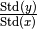 is constant under the
permutation of , we can calculate the p-value using the permutation
test of the correlation.
>>> from __future__ import print_function
>>> import numpy as np
>>> X = np.array([np.ones(10), np.random.random_integers(1, 4, 10)]).T
>>> beta = np.array([1.2, 2])
>>> epsilon = np.random.normal(0, .15, 10)
>>> y = X.dot(beta) + epsilon
>>> from permute.core import corr
>>> t, pv_left, pv_right, pv_both, dist = corr(X[:, 1], y)
>>> print(t)
0.998692462616
>>> print(pv_both)
0.0007
>>> print(pv_right)
0.0007
>>> print(pv_left)
1.0
>>> t, pv_both, dist = corr(X[:, 1], y)
>>> print(t)
0.103891027265
>>> print(pv_both)
0.765
>>> print(pv_right)
0.3818
>>> print(pv_left)
0.619